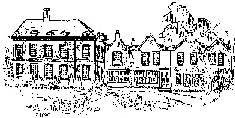
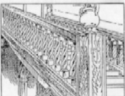
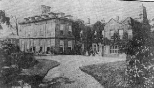
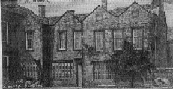
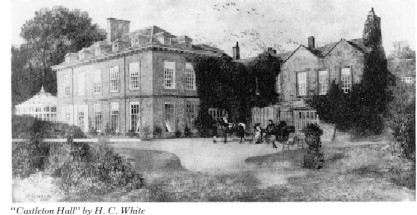
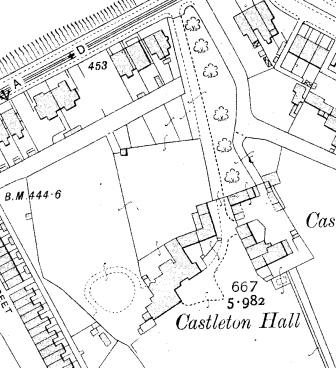

Castleton Hall
This is a summary, in date order, of the information contained within the Victoria History of the County of Lancaster. It was published in 1906 and consists of eight volumes describing the inhabitants of the county, drawn from documentary evidence. References are to Volume 4 of the History of Lancashire unless otherwise stated.
Castleton Hall was built around the reign of Elizabeth I and is an irregularly shaped two‑storey stone building with the front facing east. In 1626 it was described as “a fair mansion house, being built with freestone” with adjoining stables, ox house, dove house, gardens, orchards, and courts (Fishwick, Rochdale in the Beginning of the 17th Century). The south wing was pulled down in 1719.
Francis Holt constructed Castleton Hall in 1515. The hall had beautiful gardens with a stream running in front of it and thickly wooded grounds. Henry VIII sold the Castleton estate in 1542 to Robert Holt of Stubley, after which it became the family’s chief residence. James Holt and his widow were the last Holts at Castleton in 1713. The Entwistle family inherited the house from Dorothy Holt, daughter of Robert Holt, who married into the Entwistle family in 1649.


The Main Staircase
The great hall (26 ft long and 17 ft 3 in wide) formed part of the main entrance to the house. Some of the walls were oak‑panelled, and in the upper lights of one of the windows were the arms of the Holts of Gristlehurst and Robert Holt of Castleton, along with other shields showing their alliances. The upper rooms were accessed from the back of the hall via a small oak staircase with twisted balusters. The staircase is a fine example of early 18th‑century Renaissance detail, with open twisted balusters and massive square carved newels.
One of the owners, Robert Holt, was a magistrate, deputy lieutenant for the county, and High Sheriff between 1634 and 1640.
The house was demolished in 1919.




Map of Castleton Hall, taken from Lancashire sheet LXXXVIII 8, Edition of 1910